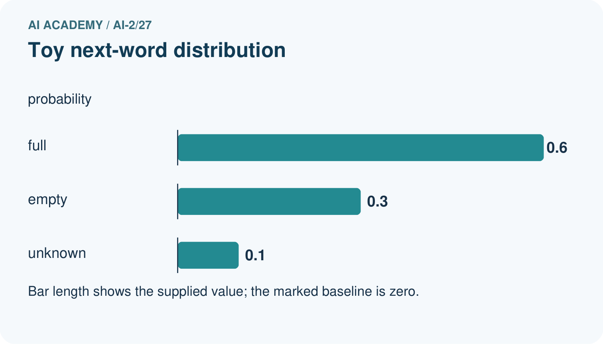
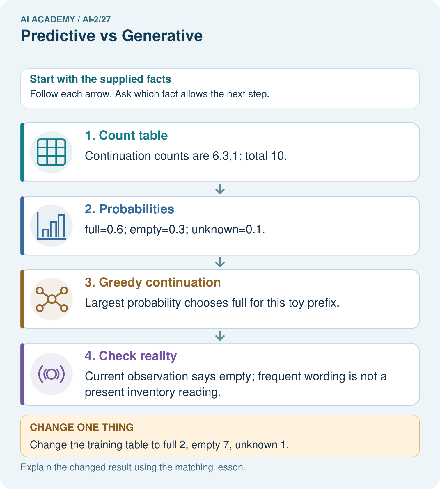
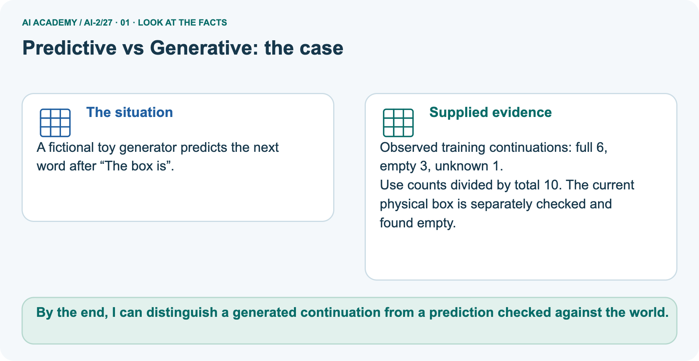
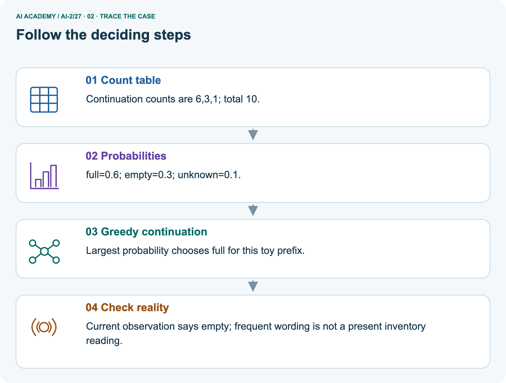
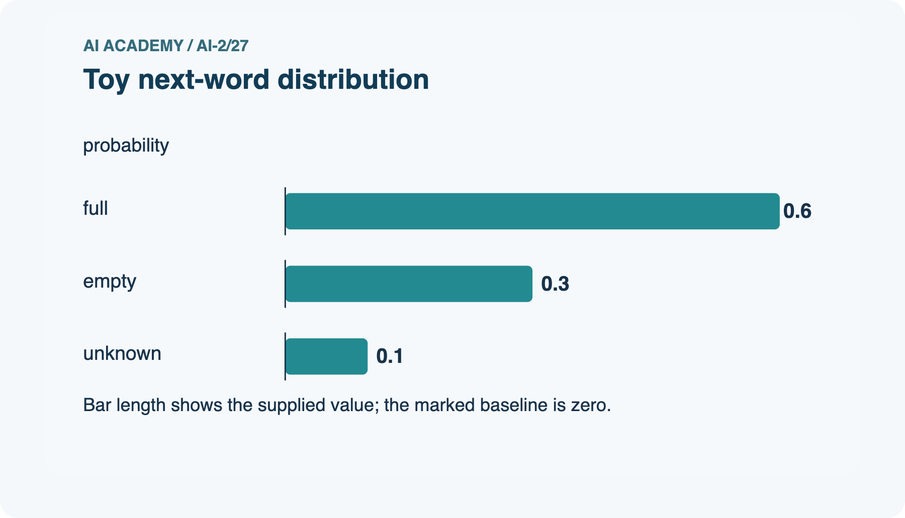
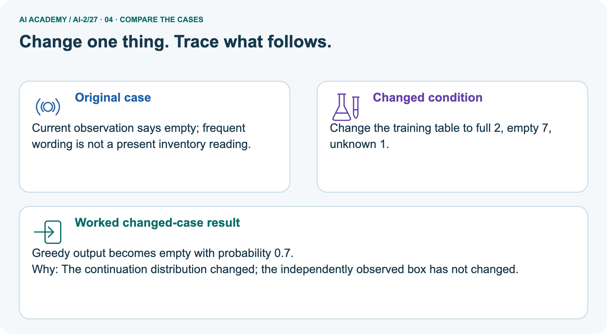
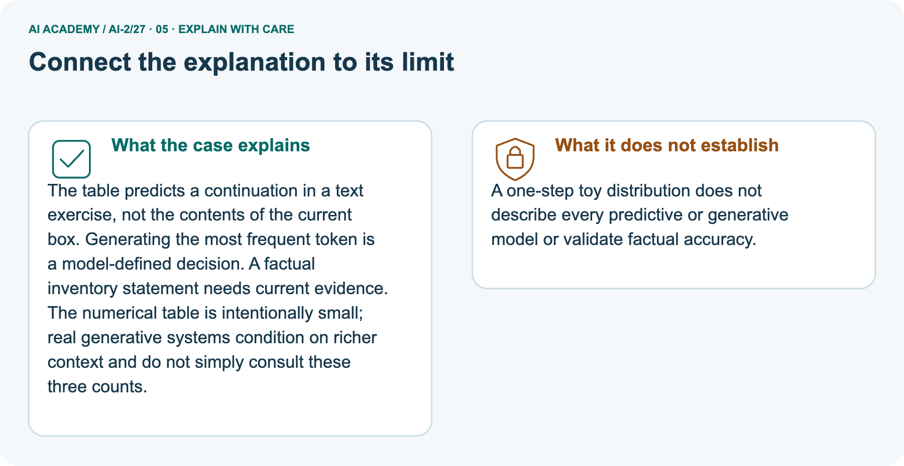
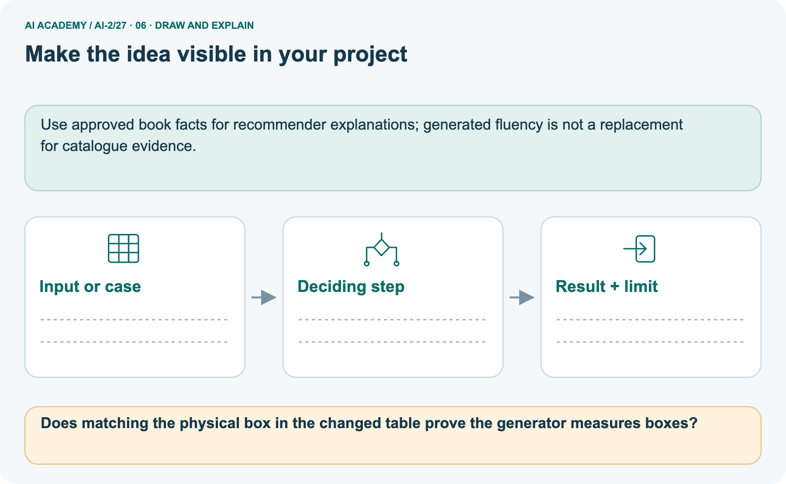

AI Academy · Level 2 · Grade 7 · Week 27 · Workbook
Predictive vs Generative
Learn to understand, design, build, test and explain AI systems responsibly.
Project: Transparent Book Recommender
THE CONNECTED WEEK
One connected objective-and-evidence record.
Identify component targets, compute a distribution, follow the prefix and design useful evaluation checks.
Keep one habit: Retain counts, probabilities, conditional context, current observations and unverified claims separately.
Main lesson · Section 1
Recall: reconnect earlier ideas
Retrieve before opening notes.
Retrieve and explain
Try the recall before opening notes. Then use a different colour or a labelled second line to correct your explanation.
Without opening the old lesson, explain one key idea from Image and Voice Pipelines. Give an example and a mistake that the idea helps you avoid.
Without opening the old lesson, explain one key idea from Feedback Loops. Give an example and a mistake that the idea helps you avoid.
Without opening the old lesson, explain one key idea from Similarity by Selected Traits. Give an example and a mistake that the idea helps you avoid.
Earlier wording, alternatives and picture transcripts
Image and Voice Pipelines
Feedback Loops
Similarity by Selected Traits
Main lesson · Section 12
W1 · Identify each component’s target
A combined application can classify, retrieve and generate.
Your evidence record
Marker corpus for prefix The marker is: red6,blue3,green1,total10. The following table after red has end0.8,today0.2; it conditions on a different expanded prefix. The separate box corpus has full6,empty3,unknown1 with a current empty observation. Corpus counts do not establish a present physical state. W4 has its own signal counts and observation.
Classify these components by target: label a message request/report; continue a prefix with a sequence; retrieve a stored sensor record. Explain why the application may combine them.
Main lesson · Section 13
W2 · Compute the marker distribution
Use the given corpus total and label its meaning.
Your evidence record
Marker corpus for prefix The marker is: red6,blue3,green1,total10. The following table after red has end0.8,today0.2; it conditions on a different expanded prefix. The separate box corpus has full6,empty3,unknown1 with a current empty observation. Corpus counts do not establish a present physical state. W4 has its own signal counts and observation.
For The marker is, calculate the three empirical probabilities, their sum and their meaning.
Main lesson · Section 14
W3 · Follow the expanded prefix
Different conditional tables describe different alternatives.
Your evidence record
Marker corpus for prefix The marker is: red6,blue3,green1,total10. The following table after red has end0.8,today0.2; it conditions on a different expanded prefix. The separate box corpus has full6,empty3,unknown1 with a current empty observation. Corpus counts do not establish a present physical state. W4 has its own signal counts and observation.
After red is selected, the expanded-prefix table gives end 0.8 and today 0.2. Explain why these values cannot be substituted for the red/blue/green probabilities.
Main lesson · Section 16
W5 · Design distinct evidence and response checks
Continuation fit alone cannot validate current-status claims.
Your evidence record
Marker corpus for prefix The marker is: red6,blue3,green1,total10. The following table after red has end0.8,today0.2; it conditions on a different expanded prefix. The separate box corpus has full6,empty3,unknown1 with a current empty observation. Corpus counts do not establish a present physical state. W4 has its own signal counts and observation.
A system reports current room status using retrieved measurements and generated sentences. Name checks for evidence, response quality and permission.
Main lesson · Section 4
W4 · Analyse a new corpus independently
Keep one first attempt before hints or feedback.
Read and explain independently
For prefix The signal is, counts are high 2, low 5, unknown 3. Compute all probabilities and the most frequent continuation. A current measurement reports high.
State what the most frequent continuation does and does not establish.
Keep a fair record
Attempt this case before feedback. Record any help. Earlier examples below are further practice; a case already practised with feedback cannot establish fresh transfer.
Earlier wording, alternatives and picture transcripts
Independent case: Analyse a new corpus independently
Main lesson · Section 9
Project · Keep the decision and its evidence
Add this week’s change to your existing project record.
Your evidence record
Keep scoring predictive and explanations templated or carefully generated and verified.
The project change and evidence I will keep
Main lesson · Section 17
Feedback · Repair and return
Keep the first attempt, the repair and a changed-case return.
Your evidence record
| Evidence | My record |
|---|---|
| Worked alone / hint / model | |
| First step I repaired and why | |
| New case checked later; date and result | |
| What I can now explain without notes | |
| One remaining question |
Revisit this idea with your teacher after a delay. Familiarity is different from explaining and using it on a changed case.
Main lesson · Section 10
Finish · Judge the evidence in your work
Point to work that supports your confidence level.
Your evidence record
- I can explain the mechanism.
- I can show evidence.
- I can handle a changed case.
- I can name a limit.
Mark each as not yet, with help or independently, and attach supporting work.
Teacher review ____________________ Next step ____________________
Reference bank and extra practice
Choose the reference that helps your next step.
Reference · Supported W2 record
Reference · Section 2
Reference · Supported W2 record
This is the same W2 attempt. Keep one response record.
Use this when helpful
Use W2: Compute the distribution for Generative and predictive objectives. Record the answer once; the lesson and workbook refer to the same attempt.
| Given inputs | Procedure I chose | Middle steps | Result and check |
|---|---|---|---|
Extra practice · Repair the explanation
Reference · Section 3
Extra practice · Repair the explanation
Explain the deciding fact before discussing the answer.
Use this when helpful
Use the worked case for Generative and predictive objectives. Proposed explanation: “Generative models do not predict”. Decide whether this explanation is supported.
Point to the step or supplied fact that decides; explain your repair if needed.
Reference · Original learning target
Reference · Section 5
Reference · Original learning target
Use this target to inspect an explanation.
Use this when helpful
A tool retrieves a book description, predicts a genre, then writes a new blurb. Identify each operation and give one distinct failure to check at each stage.
Extra practice · A complete case
Reference · Section 6
Extra practice · A complete case
Try the question before checking the worked explanation.
Use this when helpful
A labels genre; B writes a new blurb; C computes 24/6.
Distinguish operations.
Show your trace, calculation or evidence
Extra practice · A changed case
Reference · Section 7
Extra practice · A changed case
Keep this practice separate from the reserved independent attempt.
Use this when helpful
One model labels a review positive or negative; another writes a new review. Which classifies and which generates? Must generated text be true?
My practice answer and reason
Week 27 Test and reflect
Extra practice · Design a revealing test
Reference · Section 8
Extra practice · Design a revealing test
Predict before tracing or testing.
Use this when helpful
Create a changed input, boundary case or missing-information case. Write the expected answer or safe response before testing.
| Test record | My evidence |
|---|---|
| Changed input or condition | |
| Expected answer or fallback | |
| Observed result | |
| Why the result occurred |
Reference · Original target response space
Reference · Section 11
Reference · Original target response space
This teaching case is practice rather than a fresh assessment.
Use this when helpful
A tool retrieves a book description, predicts a genre, then writes a new blurb. Identify each operation and give one distinct failure to check at each stage.
Record support used: none, hint or teacher explanation.
Reference · Independent-case response copy
Reference · Section 15
Reference · Independent-case response copy
This duplicates W4. Reuse the same first-attempt record.
Use this when helpful
For prefix The signal is, counts are high 2, low 5, unknown 3. Compute all probabilities and the most frequent continuation. A current measurement reports high.
State what the most frequent continuation does and does not establish.
Extra practice · Use the worked picture
Reference · Section 18
Extra practice · Use the worked picture
Keep the explanation and the support you used.
Use this when helpful
A fictional toy generator predicts the next word after “The box is”.
Observed training continuations: full 6, empty 3, unknown 1.
Use counts divided by total 10. The current physical box is separately checked and found empty.






Does matching the physical box in the changed table prove the generator measures boxes?
Support used: alone / hint / worked example. This record is practice evidence.
Project connection: Use approved book facts for recommender explanations; generated fluency is not a replacement for catalogue evidence.
Reference · Project portfolio record
Reference · Section 19
Reference · Project portfolio record
Extend your main project response when helpful.
Use this when helpful
Project: Transparent Book Recommender
Current milestone: Prepare the demonstration. Gather reproducible instructions, evidence, access checks and remaining limitations.
Use approved book facts for recommender explanations; generated fluency is not a replacement for catalogue evidence.
| Evidence to keep | My record |
|---|---|
| This week’s input and deciding step | |
| Prediction and actual result (or labelled paper trace) | |
| One change since the previous checkpoint and why | |
| One error or limit and the next test |
Extra practice: pictures, repair and feedback
Reference · Section 20
Extra practice: pictures, repair and feedback
Attempt each question before opening its explanation. Use one browser or paper copy.
First supported question
A fictional toy generator predicts the next word after “The box is”.
Which labelled step matches this detail? Current observation says empty; frequent wording is not a present inventory reading.
1. Probabilities
2. Count table
3. Greedy continuation
4. Check reality
Hint if needed: Read the steps in the pictorial case. Match the supplied detail to the stage that performs or records it.
Practice 1: explain the deciding evidence
Check the first explanation
After your attempt, compare with the supported explanation: Check reality Current observation says empty; frequent wording is not a present inventory reading.
The table predicts a continuation in a text exercise, not the contents of the current box. Generating the most frequent token is a model-defined decision. A factual inventory statement needs current evidence.
The numerical table is intentionally small; real generative systems condition on richer context and do not simply consult these three counts.
Changed-case question
Changed-case practice: Change the training table to full 2, empty 7, unknown 1. Which conclusion is supported by the supplied facts?
1. Greedy output becomes empty; the model assigns that token probability 0.7.
2. This one example guarantees correct results for every future input.
3. We can decide the result without examining the changed input or the procedure.
Hint if needed: Use the changed condition and the deciding step in the pictorial trace. The answer must say what follows from those facts.
Practice 2: explain the deciding evidence
Check the changed case
After your attempt, compare with the supported explanation: Greedy output becomes empty; the model assigns that token probability 0.7. The continuation distribution changed; the independently observed box has not changed.
Repair and save your work
Review Image and Voice Pipelines (ai-2/26). Goal: Explain the mechanism and terminology of speech pipelines and multimodal evidence.
Short practice: Which stage first fails, and why should the faulty transcript not be silently overwritten?. Return to this week and explain what you changed.
Review Feedback Loops (ai-2/24). Goal: Implement a deterministic recommender. Short practice: What extra field would reveal why comparing raw clicks is misleading?. Return to this week and explain what you changed.
Review Similarity by Selected Traits (ai-2/21). Goal: Represent items with numeric features. Short practice: Explain why B ceases to be a closest option without any candidate data changing..
Return to this week and explain what you changed.
Use Download completed work in the hosted lesson to export your answers, reflections, practice feedback and code-run evidence. Open the HTML copy to read or print it.
Drafts stay in this browser when storage is available; clear drafts on a shared device.
Earlier wording, alternatives and picture transcripts
Use this supported practice once, in the browser or on paper. Keep the reserved independent assessment for a separate first attempt before teacher feedback.
Repair a missing building block
Keep your completed work
Reference · Six-picture response sheets
Reference · Section 21
Reference · Six-picture response sheets
Choose the image that helps rather than repeating all six.
01. Predictive vs Generative: the case



A fictional toy generator predicts the next word after “The box is”. Supplied facts: Observed training continuations: full 6, empty 3, unknown 1. Use counts divided by total 10.
The current physical box is separately checked and found empty.
Point to the given fact that matters most. Explain why it matters.
02. Follow the deciding steps



Count table: Continuation counts are 6,3,1; total 10. → Probabilities: full=0.6; empty=0.3; unknown=0.1. → Greedy continuation: Largest probability chooses full for this toy prefix. → Check reality: Current observation says empty; frequent wording is not a present inventory reading.
Point to each numbered stage and explain which recorded input it uses.
03. Toy next-word distribution



Toy next-word distribution. Units: probability. full: 0.6. empty: 0.3. unknown: 0.1.
Read the labels and values. Explain the relationship the model shows.
04. Change one thing. Trace what follows.



Original case: Current observation says empty; frequent wording is not a present inventory reading. Changed condition: Change the training table to full 2, empty 7, unknown 1.
Expected result: Greedy output becomes empty; the model assigns that token probability 0.7. Reason: The continuation distribution changed; the independently observed box has not changed.
Predict before checking the worked changed-case result. Name what changed and what the supplied facts allow you to conclude.
05. Connect the explanation to its limit



The table predicts a continuation in a text exercise, not the contents of the current box. Generating the most frequent token is a model-defined decision. A factual inventory statement needs current evidence.
The numerical table is intentionally small; real generative systems condition on richer context and do not simply consult these three counts.
Limit: A one-step toy distribution does not describe every predictive or generative model or validate factual accuracy.
Explain the case, then point to a limit on the claim.
06. Make the idea visible in your project



Use approved book facts for recommender explanations; generated fluency is not a replacement for catalogue evidence. Draw your input, deciding step, result and limit.
Supported question: Does matching the physical box in the changed table prove the generator measures boxes?
Draw your project trace and justify the deciding step using evidence.